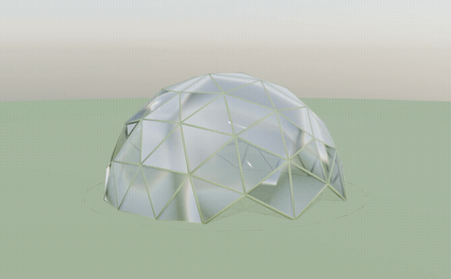
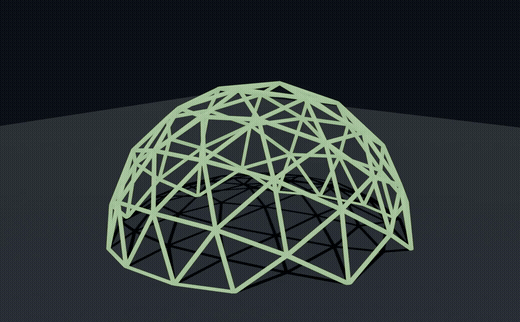
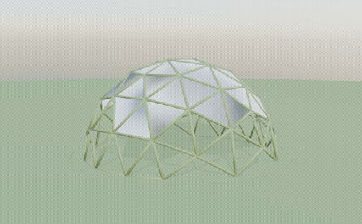
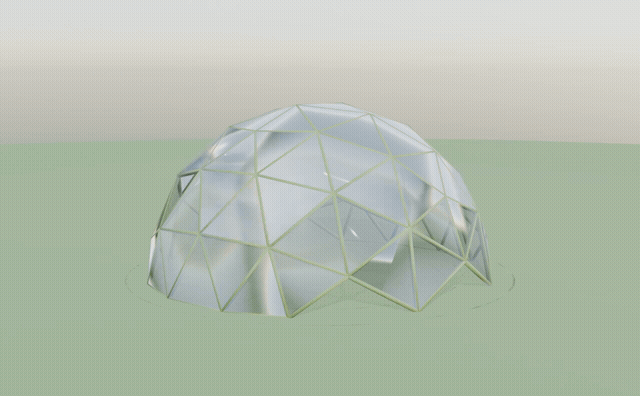

⭐ 崩壊シミュレーション
collapse_simulation.gif · 180フレーム

雪の重みで竹ビニールドームが潰れる様子。健全→軋み→崩落の3段階。
竹ビニールドーム雪積もり
bamboo_vinyl_snow_v2.gif · 150フレーム
竹格子＋半透明ビニール被覆＋雪冠＋舞う雪。緑の草原から雪原へ。
応力アニメ（FEM色変化）
stress_animation.gif · 100フレーム

雪が積もるほど竹部材の利用率が緑→黄→赤に変化。危険部位が一目でわかる。
シンプル雪積もり
snow_accumulation.gif · 90フレーム

緑の草原に立つ竹ドームに雪が降り、雪原に変化していく。
統合プレゼンハイライト
presentation_highlight.gif · 15秒

雪積もり→応力色変化の流れを15秒に凝縮したハイライト。